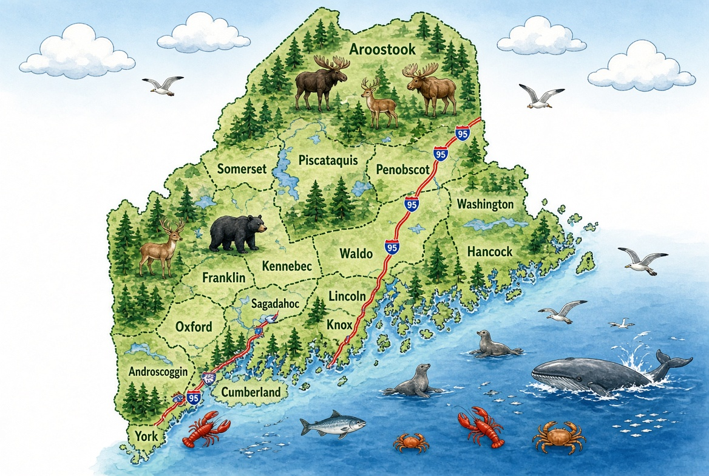

1. Austin Theriault | R | Fort Kent | Austin.Theriault@legislature.maine.gov
2. Roger C. Albert | R | Madawaska | Roger.Albert@legislature.maine.gov | 207-436-9156
3. Susan Bernard | R | Fort Fairfield | Check legislature site
4. Timothy Conrad Guerrette | R | Caribou | Timothy.Guerrette@legislature.maine.gov | 207-227-3577
5. Douglas C. Carlisle Jr. | R | Presque Isle | New member
6. Donald James Ardell | R | Monticello | Donald.Ardell@legislature.maine.gov | 207-521-1130
7. Jantzen Stephen Craine | R | Houlton | New member
8. Tracy Lynn Quint | R | Hodgdon | Tracy.Quint@legislature.maine.gov | 207-217-4493
9. Arthur K. Mingo | R | Calais | Arthur.Mingo@legislature.maine.gov | 207-214-8537
10. William R. Tuell | R | East Machias | William.Tuell@legislature.maine.gov | 207-271-8521
11. Tiffany Strout | R | Harrington | Tiffany.Strout@legislature.maine.gov | 207-598-7043
12. Thomas Arthur Hart Jr. | R | Gouldsboro | New member
13. Russell P. White | R | Ellsworth | Russell.White@legislature.maine.gov | 207-460-2299
14. Gary R. Friedmann | D | Bar Harbor | Gary.Friedmann@legislature.maine.gov | 207-460-7362
15. Holly R. Eaton | D | Deer Isle | Holly.Eaton@legislature.maine.gov | 207-610-9281
16. Nina Azella Milliken | D | Blue Hill | Nina.Milliken@legislature.maine.gov | 207-412-8828
17. Steven Matthew Bishop | R | Bucksport | Steven.Bishop@legislature.maine.gov | 207-991-7909
18. Mathew David McIntyre | R | Lowell | Mathew.McIntyre@legislature.maine.gov | 207-680-0678
19. Richard H. Campbell | R | Orrington | Richard.Campbell@legislature.maine.gov | 207-745-7748
20. Dani O'Halloran | D | Brewer | Dani.OHalloran@legislature.maine.gov | 207-745-4499
21. Ambureen Rana | D | Bangor | Ambureen.Rana@legislature.maine.gov | 207-350-5081
22. Laura D. Supica | D | Bangor | Laura.Supica@legislature.maine.gov | 207-717-5702
23. Victoria P. Kornfield | D | Bangor | Returning
24. Sean F. Faircloth | D | Bangor | Sean.Faircloth@legislature.maine.gov | 207-307-9868
25. Laurie Osher | D | Orono | Laurie.Osher@legislature.maine.gov | 207-944-6743
26. James F. Dill | D | Old Town | James.Dill@legislature.maine.gov | 207-827-3498
27. David Giles | R | Corinth | New member
28. Irene A. Gifford | R | Lincoln | Irene.Gifford@legislature.maine.gov
29. Nancy J. Theriault | R | Millinocket | Nancy.Theriault@legislature.maine.gov
30. James L. White | R | Guilford | Incumbent
31. Andrew R. Torbett | R | Atkinson Twp. | New member
32. Shawn L. Lancaster | R | Garland | New member
33. Kenneth Wade Fredette | R | Newport | Kenneth.Fredette@legislature.maine.gov
34. Stacey K. Guerin | R | Glenburn | Returning
35. James E. Thorne | R | Carmel | Incumbent
36. Kimberly M. Haggan | R | Hampden | Incumbent
37. Reagan L. Paul | R | Winterport | Reagan.Paul@legislature.maine.gov
38. Benjamin C. Hymes | R | Waldo | Incumbent
39. Madison Crissey Cook | D | Belfast | New member
40. D. Michael Ray | D | Lincolnville | Michael.Ray@legislature.maine.gov
41. Joshua D. Gerritsen | D | Rockport | New member
42. Valli D. Geiger | D | Rockland | Valli.Geiger@legislature.maine.gov
43. Rhiannon Corey Hampson | D | Thomaston | New member
44. Shawn Saindon | I | Warren | New member
45. Clinton E. Collamore | I | Waldoboro | Returning
46. Jennifer F. Mayher | D | Newcastle | New member
47. Wayne K. Farrin | D | Jefferson | Incumbent
48. Charlotte Nutt | D | Edgecomb | New member
49. Trent E. Vellella | D | West Bath | New member
50. David A. Sinclair | D | Bath | David.Sinclair@legislature.maine.gov
51. Rafael Macias | D | Topsham | Incumbent
52. Sally Jeane Cluchey | D | Bowdoinham | Sally.Cluchey@legislature.maine.gov
53. Michael H. Lemelin | R | Chelsea | Michael.Lemelin@legislature.maine.gov
54. Karen L. Montell | D | Gardiner | Incumbent
55. Maureen AuCoin | D | Hallowell | New member
56. Randall Adam Greenwood | R | Wales | Incumbent
57. Tavis Rock Hasenfus | D | Readfield | Incumbent
58. Sharon C. Frost | I | Belgrade | Sharon.Frost@legislature.maine.gov
59. Katrina Couch Ray-Saulis | D | Augusta | New member
60. William R. Bridgeo | D | Augusta | William.Bridgeo@legislature.maine.gov
61. Alicia Carol Collins | R | Sidney | Alicia.Collins@legislature.maine.gov | 207-751-4736
62. Katrina J. Smith | R | Palermo | Katrina.Smith@legislature.maine.gov | 207-230-9583
63. Paul R. Flynn | R | Albion | Paul.Flynn@legislature.maine.gov | 207-314-5525
64. Flavia M. DeBrito | D | Waterville | Flavia.DeBrito@legislature.maine.gov | 207-660-7212
65. Cassie Lynn Julia | D | Waterville | Cassie.Julia@legislature.maine.gov | 207-649-5110
66. Michael D. Perkins | R | Oakland | Returning
67. Shawn M. Dixon | R | Benton | New member
68. Amanda Noelle Collamore | R | Pittsfield | Amanda.Collamore@legislature.maine.gov
69. Dean A. Cray | R | Palmyra | Dean.Cray@legislature.maine.gov
70. Jennifer Lynn Poirier | R | Skowhegan | Jennifer.Poirier@legislature.maine.gov
71. John E. Ducharme III | R | Madison | Jack.Ducharme@legislature.maine.gov
72. Douglas Andrew Thomas | R | Ripley | Returning
73. Michael Soboleski | R | Phillips | Michael.Soboleski@legislature.maine.gov
74. Russell J. Black | R | Wilton | Returning
75. H. Scott Landry | D | Farmington | Scott.Landry@legislature.maine.gov
76. Sheila Ann Lyman | R | Livermore Falls | Sheila.Lyman@legislature.maine.gov
77. Tammy L. Schmersal-Burgess | R | Mexico | Tammy.Schmersal-Burgess@legislature.maine.gov
78. Rachel A. Henderson | R | Rumford | Incumbent
79. Michael J. Lance | R | Paris | Incumbent
80. Ernest M. Fitts IV | R | Oxford | New member
81. Christopher A. Easton | D | Waterford | New member
82. Christopher Alfred Lewey | D | Fryeburg | New member
83. Timothy J. Becker | D | Bridgton | New member
84. Mark Walker | R | Naples | Mark.Walker@legislature.maine.gov
85. Adrienne Paul | R | Standish | New member
86. Abigail N. Geer | D | Raymond | New member
87. David Wayne Boyer Jr. | R | Poland | David.Boyer@legislature.maine.gov | 207-274-4633
88. Dana N. Staples | D | Auburn | New member
89. Adam R. Lee | D | Auburn | Adam.Lee@legislature.maine.gov | 207-312-4057
90. Pamela B. Hart | D | Auburn | New member
91. Jeffrey L. Timberlake | R | Turner | Returning
92. Stephen J. Wood | R | Greene | Stephen.Wood@legislature.maine.gov
93. Julia McCabe | D | Lewiston | Incumbent
94. Scott A. Harriman | D | Lewiston | Incumbent
95. Kiernan Innes Majerus-Collins | D | Lewiston | New member
96. Kerryl Lee Clement | R | Lewiston | New member
97. Dale John Crafts | R | Lisbon | Returning
98. Kilton McCarthy Webb | D | Durham | Incumbent
99. Cheryl A. Golek | D | Harpswell | Cheryl.Golek@legislature.maine.gov
100. Daniel Joseph Ankeles | D | Brunswick | Daniel.Ankeles@legislature.maine.gov
101. Poppy T. Arford | D | Brunswick | Poppy.Arford@legislature.maine.gov
102. Maura H. Pillsbury | D | Freeport | New member
103. Karin Orenstein | D | Yarmouth | New member
104. R. Melissa Winslow | R | New Gloucester | New member
105. Anne Palmer Graham | D | North Yarmouth | Anne.Graham@legislature.maine.gov
106. Bradley M. Youngs | D | Windham | New member
107. Joseph A. Campbell | D | Windham | New member
108. Parnell W. Terry | D | Gorham | Incumbent
109. Seven R. Siegel | D | Gorham | New member
110. Christina R.C. Mitchell | D | Cumberland | Incumbent
111. Amy D. Kuhn | D | Falmouth | Amy.Kuhn@legislature.maine.gov
112. Sean M. Mahoney | D | Falmouth | New member
113. Grayson Benjamin Lookner | D | Portland | Grayson.Lookner@legislature.maine.gov
114. April D. Fournier | D | Portland | New member
115. Andrew J. Zarro | D | Portland | New member
116. Samuel Lewis Zager | D | Portland | Sam.Zager@legislature.maine.gov
117. Matthew Moonen | D | Portland | Matt.Moonen@legislature.maine.gov
118. Yusuf M. Yusuf | D | Portland | Yusuf.Yusuf@legislature.maine.gov
119. Michael P. Dixon | D | Portland | New member
120. Jason J. Shedlock | D | South Portland | New member
121. Lucy Louisa Perkins | D | South Portland | New member
122. Matthew D. Beck | D | South Portland | Matthew.Beck@legislature.maine.gov
123. Michelle N. Boyer | D | Cape Elizabeth | Michelle.Boyer@legislature.maine.gov | 207-239-6318
124. Eric James Nathanson | D | Scarborough | New member
125. Kelly Maureen Noonan Murphy | D | Scarborough | Kelly.Murphy@legislature.maine.gov | 207-318-3215
126. Andrew Gattine | D | Westbrook | Andrew.Gattine@legislature.maine.gov | 207-409-3477
127. Morgan J. Rielly | D | Westbrook | Morgan.Rielly@legislature.maine.gov | 207-228-5767
128. Suzanne M. Salisbury | D | Westbrook | Suzanne.Salisbury@legislature.maine.gov | 207-899-6863
129. Marshall F. Archer | D | Saco | Marshall.Archer@legislature.maine.gov | 207-653-2173
130. Lynn Holland Copeland | D | Saco | Lynn.Copeland@legislature.maine.gov | 207-712-6776
131. Robert James Kelly | D | Old Orchard Beach | New member
132. Ryan Fecteau | D | Biddeford | ryan.fecteau@legislature.maine.gov | 207-287-1300
133. Marc G. Malon II | D | Biddeford | Marc.Malon@legislature.maine.gov | 207-200-6376
134. Traci Gere | D | Kennebunkport | Traci.Gere@legislature.maine.gov | 207-710-3557
135. Lisa Joy Pratt | D | Kennebunk | New member
136. John Eder | R | Waterboro | John.Eder@legislature.maine.gov | 207-871-0317
137. Charles Tilburg | D | Buxton | New member
138. Jonathan Lee Kinney | R | Buxton | Returning
139. Jamie K. Newton | R | Waterboro | New member
140. Wayne R. Parry | R | Arundel | Wayne.Parry@legislature.maine.gov | 207-286-9146
141. Marc A. Boisse | R | Shapleigh | New member
142. Ayn M. Hanselmann | D | Sanford | New member
143. John R. Henkelman | D | Sanford | New member
144. Karen A. Gerrish | R | Lebanon | Returning
145. Kristin T. Davis | D | Wells | New member
146. Walter Gerard Runte Jr. | D | York | Gerry.Runte@legislature.maine.gov | 207-361-7143
147. Holly T. Sargent | D | York | Holly.Sargent@legislature.maine.gov | 207-358-4793
148. Marissa L. Tasker | D | Berwick | New member
149. Mallory A. Cook | D | South Berwick | New member
150. Alexandros Orestis | D | Eliot | New member
151. Kristi M. Mathieson | D | Kittery | Kristi.Mathieson@legislature.maine.gov | 603-969-7496